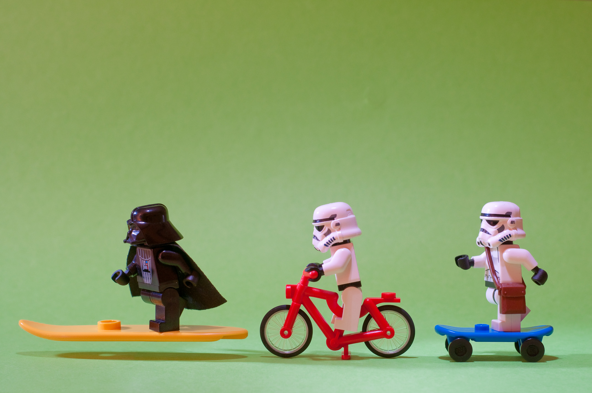
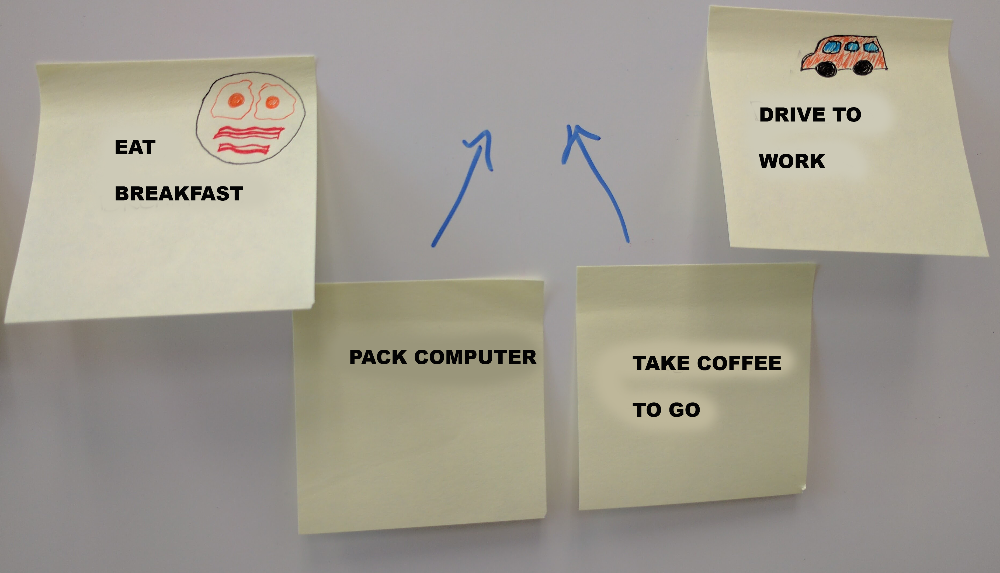
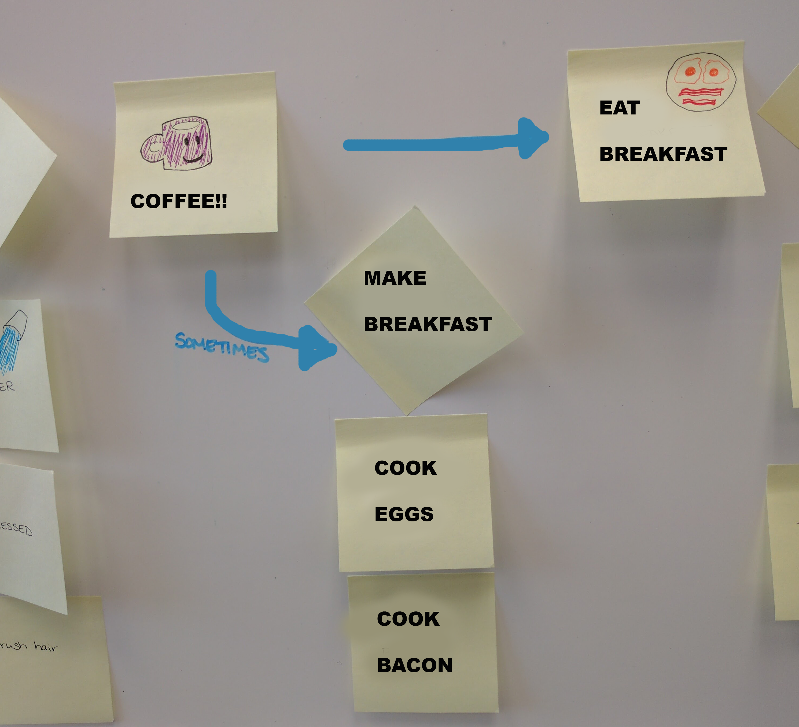
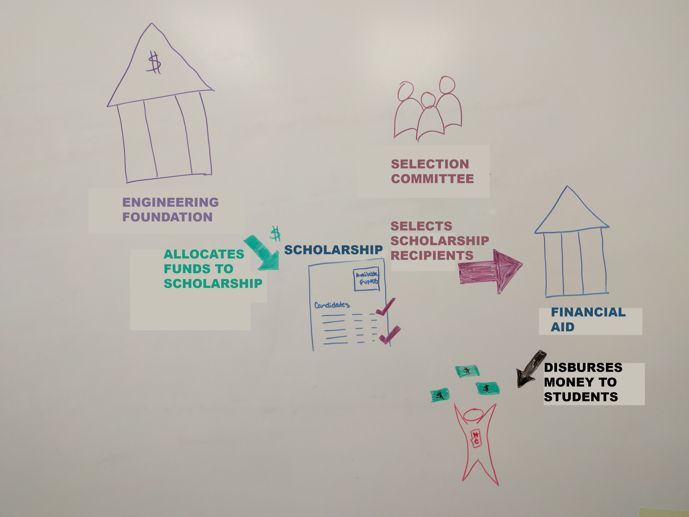
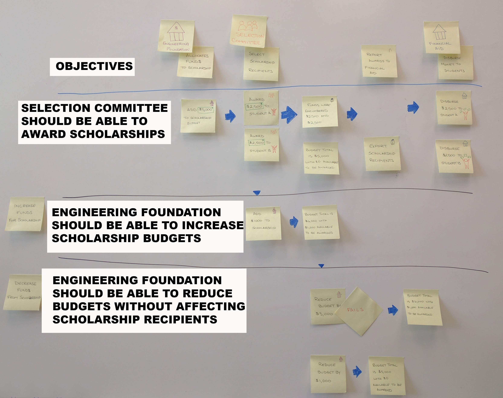

Whats Your Skateboard?

photo by [Kenny Louie(https://www.flickr.com/photos/kwl/)
Emily Stamey
Application Developer at NC State University


Ripped from the pages of (not really)

A Typical Project Workflow
- Research features and needs
- Build a prototype or wireframes
- Break the project into components or parts for implementation
- Develop each over several months
- At each release, deliver something unusable/incomplete
- Finally learn if the big guess of the prototype was correct
- Changes are much more costly, so most are left alone
Learning Objectives
- What is a story map, and why would you want to use it?
- Sketch a simple narrative flow
- Critique the Scholarships story map
What is a Story Map?
A diagram of a project that tells the story of the people and systems involved in a process.
Detail is added as we learn more about the project
The map can be built for an existing application or a new application.

Who should Story Map?
Anyone who knows the process ... Not Just Developers
At least one knowledgeable person from each group of stakeholders
When to Story Map?
*When you have questions about an application or process
*When you begin new work
*Preferably before you being development
Why Story Map?
Build shared understanding Encourage full discovery before prototyping *Prioritize work to be done as a group
*Lowers problems with estimates and feature creep
The big picture

Photo by Barnyz
Focus during development

Where?
A large, clear wall or whiteboard.
A place central to the team, at least in the beginning.
You'll need
- painter's tape
- markers
- post-its (many colors)
Your Morning
List the first five tasks or activities you did this morning after getting out of bed.
Put each one on a post-it provided
Your Typical Morning
Pick 3 things you normally do in the morning that you didn't do today
My morning - first draft

My morning - revised

Users
Who are the Actors/Users in your morning routine?
Build Activity Groups
Sometimes several tasks can be grouped together.
My morning - with activity groups

My morning - alternate path

Building the narrative
Let's put them together to build a story of your morning!
There are variations between people, days of week, local and out-of-towners
If we were automating or tracking some of these morning tasks, we might identify activity groups and prioritize those groups for our application.
Where to Learn More
- Risk
- Assumptions
- Uncertainty
If you cannot elaborate, mark it and revisit
Clarifying Questions
- What could we learn to replace risk information
- Do you really know what has been mapped, or did you fill in with assumptions.
- Are you sure about the story your are telling?
Anatomy of a Story Map
Users => actors in the story
Backbone => user activities
Walking Skeleton => major user tasks
User Stories => add detail to the story
Releases => organize and prioritize stories
Priorities => Lower Priority stories sink to the bottom

Building the map
- Build and iterate on the full story
- Frame the structure by labeling the backbone activities and the walking skeleton
- Loosely prioritize stories based on everyone's needs; lower priorities sink
What you get from this
Thorough Discovery
- Understand the full process
- Understand "why" steps are needed in the process
- Talk about things inside and outside of the app
- Simplify and lower risk at implementation
- Lowers the questions at the phase of implementation
- Limits Feature Creep (beginning implementation w/o understanding, new features come in)
- Better estimates
Discovery is cheaper at the beginning of a project, than during implementation
Focus on Outcomes
- Prioritize features based on the problem they solve
- Implement only what solves the problem or meets the objective
(instead of perceived importance)
Prioritization Tools
- Who will use this product?
- What steps must they accomplish for success?
- Remove/postpone the rest
Prioritizing Features
- Differentiator - feature sets you apart from competition
- Spoiler - moves in on someone else’s differentiator
- Cost reducer - reduces organizational costs
- Table stakes - feature necessary to compete
Prototyping
- What is the smallest thing you could build to prove/disprove an assumption?
- Sketch & prototype to test viability of the solution
- Aim for less than minimum, get feedback, and iterate often
- When you give prototype to development partners you can include metrics to see what they actually do
MVP vs. Most Valuable Features
Before we get too deep into the prototype, let's talk more about releasing valuable features every time.
A lot of times we look at the flow of the story and plan features in a chronological order
When we build in parts
When we build in parts

Iterate on the design
Most Valuable Features!!!

Strategies
- opening game strategy - when the number of features is too large, you can cut a slice across that gives you the minimum end-to-end functionality;
It doesn’t solve all user’s stories, but it affects the largest number of stories. With this product, they can have test data, begin testing it for load, and see how it will work
- midgame strategy - fill in and round out features; support optional steps; implement tough business rules; continue testing the product usability
- endgame - refine: make it look more polished and efficient; it’s here that you’ll have feedback from users that can be applied.
Strategies
Scholarships


Summary
- A tool you can use with non-technical subject matter experts, customers, etc
- A visual guide for managing your workload
- Focus on objectives when you prioritize
- Plan to deliver a useable product at each deliverable
Questions?
maybe slides
User Story
"A user story is a tool used in Agile software development to capture a description of a software feature from an end-user perspective. The user story describes the type of user, what they want and why. A user story helps to create a simplified description of a requirement."
~Wikipedia
User Story Structure
As a {role}, I want {feature} so that {reason}.
The Story Map
Composed of many user stories.
Tells the story of your application.
It can include parts of the story that happen outside of the application.